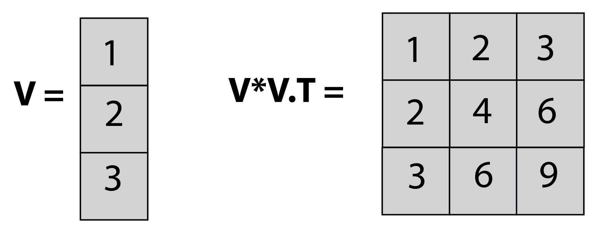
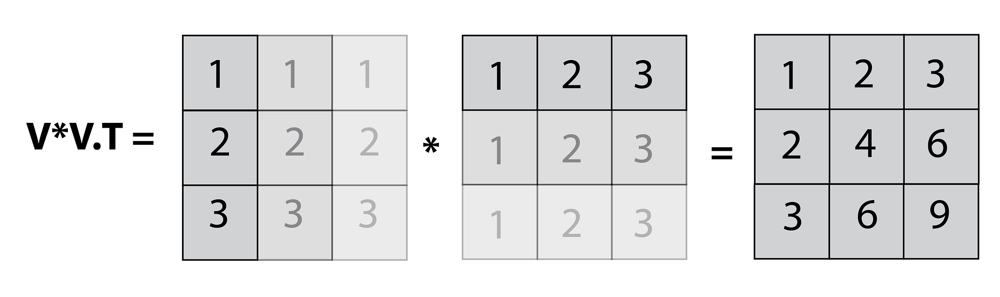
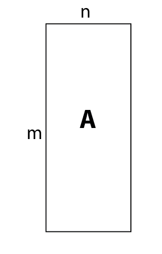
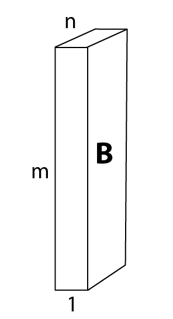
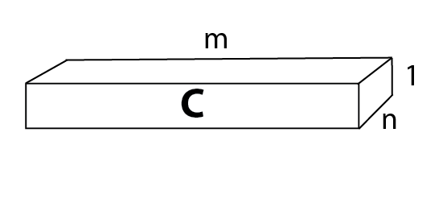
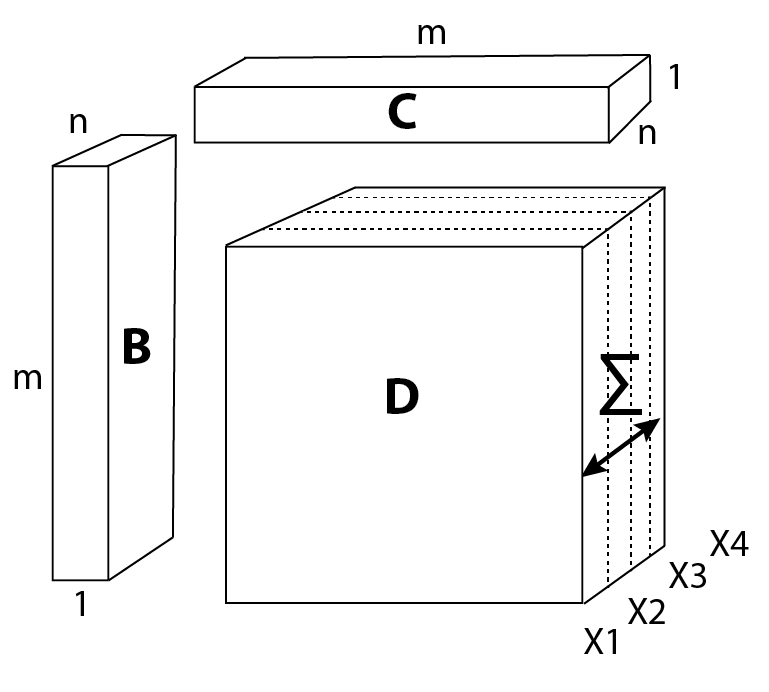
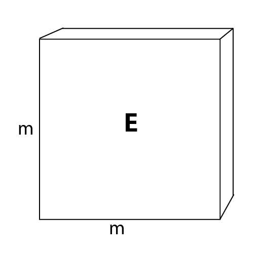

Numpy's broadcasting feature can be somewhat confusing for new users of this library, but it allows for very clean, elegant and FUN coding, so it is definitely worth the effort of getting used to. In this short article, I wanted to show a nice application of broadcasting to save some for loops and even computation time.
Let's start with a simple case.
The basic concept is that when adding or multiplying two vectors of sizes (m,1) and (1,m), numpy will broadcast (duplicate the vector) so that it allows the calculation. For example, multiplying a vector [1,2,3,4,…10] with a transposed version of itself will yield the multiplication table. For example:

In this example, we multiply a one-dimensional vector (V) of size (3,1) and the transposed version of it, which is of size (1,3), and get back a (3,3) matrix, which is the outer product of V.
If you still find this confusing, the next illustration breaks down the process into 2 steps, making it clearer:

You can think of broadcasting as simply duplicating both our vectors into a (3,3) matrix, and then performing element-wise multiplication.
We have just broadcast a 1-dimensional array into a 2-dimensional matrix. However, we could use this to broadcast a 2-dimensional array (or matrix) into a 3-dimensional one (a tensor). Just imagine that you needed to perform V*V.T for multiple vectors of the same length. You could simply stack them together, and get all the results in one pass.
Case study
In this case, I am looking to generate a Euclidean distance matrix for the iris data set. The Euclidean equation is:
Obtaining the table could obviously be performed using two nested for loops:
result = []
for i,_ in enumerate(data):
for j,_ in enumerate(data):
result[i,j] = np.sqrt(np.sum((data[i,:]-data[j,:])**2))However, it can also be performed using matrix operations (which are both about 100 times faster, and much cooler).
We take the data set (represented as 'A' in the illustration),

create a 3D copy of it, and rotate it to the orientation shown as 'B' in the illustration.

We then create another copy and rotate it as represented by 'C'.

B − C will generate (via broadcasting!) a 3D cube ('D'), sized (m,m,n), which represents the calculation \((q_i - p_i)\) for each instance (m) and feature (n) of the original data set vectors (n=4 in the iris data set).

Then, we simply raise the entire cube to the power of 2, sum the result along the axis representing the features (see illustration above), and take the square root.
The result is the distance matrix ('E')!

If you got lost in all these matrix somersaults, go back and look at the equation for calculating the Euclidean matrix. All we did was solve this equation for several vectors simultaneously.
Code
import numpy as np
from sklearn.datasets import load_iris
# Load data:
data, _ = load_iris(return_X_y=True)
def euc_matrix(A):
# generate distance matrix:
B = np.rot90(A[:,:,None],1,(1,2)) #[:,:,None] is needed to add a dimension
C = np.rot90(B,1,(0,1))
return np.sqrt(np.sum((B-C)**2, axis=2))
mat = euc_matrix(data)Summary
Broadcasting is a very clean and efficient method whenever you perform the same calculation on several instances. As an exercise, I encourage you to try using broadcasting on two 3D arrays (let's say you have n vectors, belonging to k classes). This means you will need to broadcast into the 4th dimension. It is impossible to imagine, of course, but implementing it follows the same logic.

Michael Chein, data scientist. Home · More posts